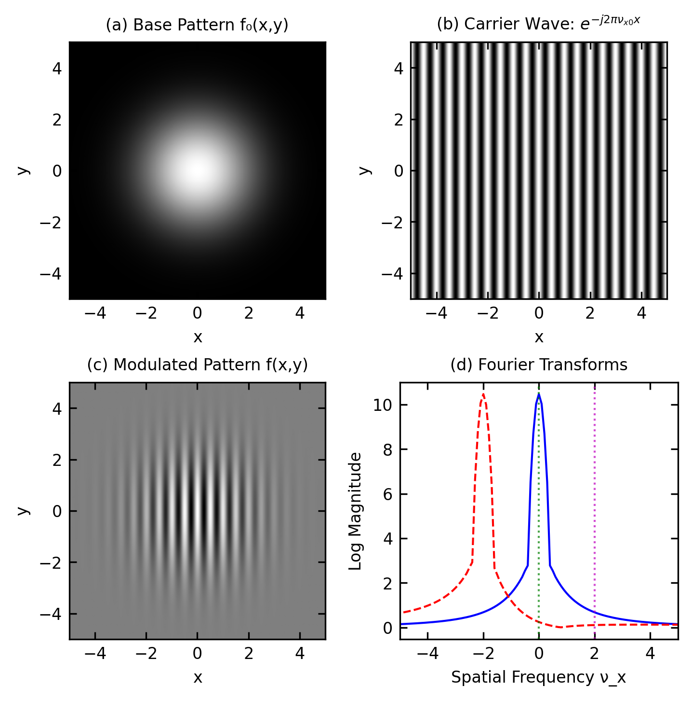
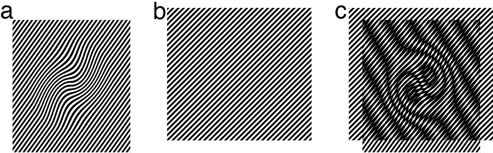
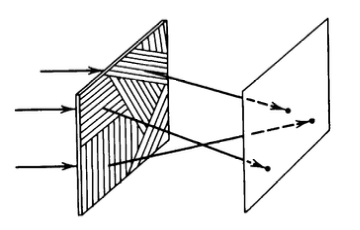
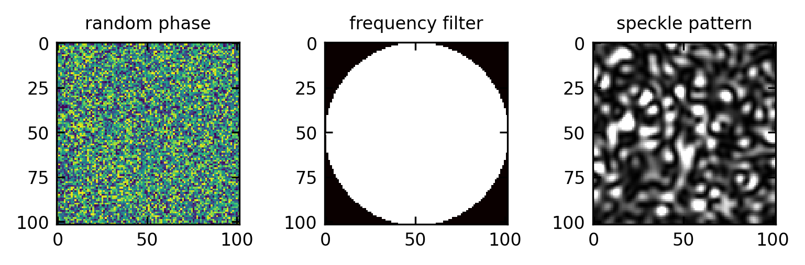
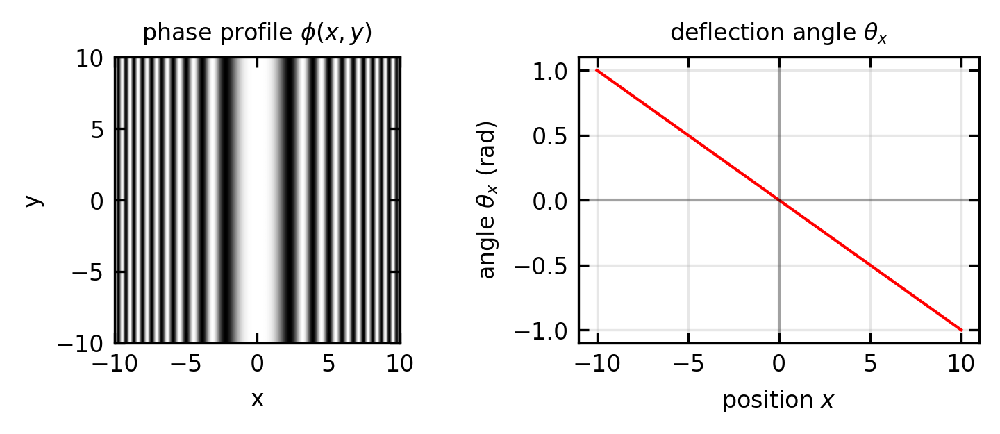
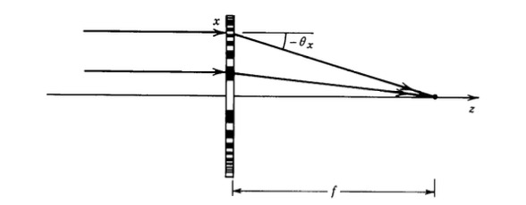

Let’s examine how spatial amplitude modulation affects the angular propagation of light. Consider a transparency with complex amplitude transmittance \(f_0(x, y)\). If its Fourier transform \(F_0(\nu_x, \nu_y)\) extends over spatial frequency ranges \(\pm \Delta \nu_x\) and \(\pm \Delta \nu_y\) in the \(x\) and \(y\) directions, the transparency will deflect an incident plane wave by angles \(\theta_x\) and \(\theta_y\) within the ranges:
\[\pm \sin^{-1}(\lambda \Delta \nu_x)\]
and
\[\pm \sin^{-1}(\lambda \Delta \nu_y)\]
respectively.
Now consider a second transparency with complex amplitude transmittance:
where \(f_0(x, y)\) varies slowly compared to the exponential carrier term, meaning \(\Delta \nu_x \ll \nu_{x0}\) and \(\Delta \nu_y \ll \nu_{y0}\). This represents an amplitude-modulated function with spatial carrier frequencies \(\nu_{x0}\) and \(\nu_{y0}\) and modulation function \(f_0(x, y)\). According to the shift property of the Fourier transform, the transform of \(f(x, y)\) is:
\[F_0(\nu_x - \nu_{x0}, \nu_y - \nu_{y0})\]
The transparency will deflect a plane wave in directions centered around the angles:
\[\theta_{x0} = \sin^{-1}(\lambda\nu_{x0})\]
and
\[\theta_{y0} = \sin^{-1}(\lambda\nu_{y0})\]
This behavior can be understood by viewing \(f(x, y)\) as a combination of the base transmittance \(f_0(x, y)\) with a phase grating having transmittance \(e^{-i 2\pi(\nu_{x0}x + \nu_{y0}y)}\) that provides the angular deflection.
Code
# Set up the coordinate systemx = np.linspace(-5, 5, 500)y = np.linspace(-5, 5, 500)X, Y = np.meshgrid(x, y)# Parameterswavelength =0.5# arbitrary unitsnu_x0 =2.0# carrier spatial frequencytheta_x0 = np.rad2deg(np.arcsin(wavelength * nu_x0)) # corresponding angle# Create base pattern f₀(x,y) - using a Gaussian patternsigma =1.5f0 = np.exp(-(X**2+ Y**2)/(2*sigma**2))# Create carrier wavecarrier = np.exp(-1j*2*np.pi*nu_x0*X)# Create modulated patternf = f0 * carrier# Calculate 2D Fourier transformsF0 = np.fft.fftshift(np.fft.fft2(f0))F = np.fft.fftshift(np.fft.fft2(f))# Create frequency axesfreq_x = np.fft.fftshift(np.fft.fftfreq(len(x), x[1]-x[0]))freq_y = np.fft.fftshift(np.fft.fftfreq(len(y), y[1]-y[0]))# Create figure with 4 subplotsfig, axs = plt.subplots(2, 2, figsize=get_size(12, 12), layout='constrained')axs = axs.flatten()# Plot the base pattern f₀(x,y)im0 = axs[0].imshow(f0, extent=[x.min(), x.max(), y.min(), y.max()], cmap='gray', origin='lower')axs[0].set_title('(a) Base Pattern f₀(x,y)')axs[0].set_xlabel('x')axs[0].set_ylabel('y')# Plot the carrier wave (real part)im1 = axs[1].imshow(np.real(carrier), extent=[x.min(), x.max(), y.min(), y.max()], cmap='gray', origin='lower')axs[1].set_title(f'(b) Carrier Wave: $e^{{-j2\\pi\\nu_{{x0}}x}}$')axs[1].set_xlabel('x')axs[1].set_ylabel('y')# Plot the modulated pattern (real part)im2 = axs[2].imshow(np.real(f), extent=[x.min(), x.max(), y.min(), y.max()], cmap='gray', origin='lower')axs[2].set_title('(c) Modulated Pattern f(x,y)')axs[2].set_xlabel('x')axs[2].set_ylabel('y')# Plot Fourier transforms (log magnitude to enhance visibility)# Plot along central row in frequency space (freq_y = 0)central_row =len(freq_y) //2axs[3].plot(freq_x, np.log(np.abs(F0[central_row, :]) +1), 'b-')axs[3].plot(freq_x, np.log(np.abs(F[central_row, :]) +1), 'r--')axs[3].set_title('(d) Fourier Transforms')axs[3].set_xlabel('Spatial Frequency ν_x')axs[3].set_ylabel('Log Magnitude')# Add markers to show the shift to ν₀axs[3].axvline(x=0, color='g', linestyle=':', alpha=0.7)axs[3].axvline(x=nu_x0, color='m', linestyle=':', alpha=0.7)# Limit frequency axis for better visibilityaxs[3].set_xlim(-5, 5)plt.show()

Figure 1— Visualization of amplitude modulation and the corresponding angular deflection. (a) The base pattern f₀(x,y) - a Gaussian envelope. (b) A carrier wave with spatial frequency ν₀. (c) The amplitude-modulated pattern f(x,y)=f₀(x,y)e^(-j2πν₀x). (d) Fourier transforms showing how the spectrum shifts with modulation, corresponding to angular deflection. In (d), the blue solid line is F₀(ν) and the red dashed line is F(ν).
This principle enables spatial-frequency multiplexing, where two images \(f_1(x, y)\) and \(f_2(x, y)\) can be recorded on the same transparency using the encoding:
By illuminating this combined transparency with a plane wave, the two images are deflected at different angles determined by their carrier frequencies, allowing them to be spatially separated. This technique is particularly valuable in holography, where separating different image components recorded on the same medium is often necessary.
Structured Illumination Microscopy (SIM)
The amplitude modulation concepts presented here form the theoretical foundation for Structured Illumination Microscopy (SIM), a super-resolution imaging technique. In SIM, a sample is illuminated with a known spatially structured pattern, typically a sinusoidal grid. This can be mathematically represented as an illumination intensity pattern:
\[I_{\text{illum}}(x,y) = I_0[1 + m\cos(2\pi\nu_0 x + \phi)]\]
where \(I_0\) is the average intensity, \(m\) is the modulation depth, \(\nu_0\) is the spatial frequency of the illumination pattern, and \(\phi\) is the phase.
When this structured pattern illuminates a sample with spatial structure \(S(x,y)\), the resulting observed image is simply the product:
\[D(x,y) = S(x,y) \cdot I_{\text{illum}}(x,y)\]
Substituting the illumination pattern:
\[D(x,y) = S(x,y) \cdot I_0[1 + m\cos(2\pi\nu_0 x + \phi)]\]\[D(x,y) = I_0 \cdot S(x,y) + I_0 \cdot m \cdot S(x,y)\cos(2\pi\nu_0 x + \phi)\]
Using Euler’s formula, we can rewrite the cosine term:
\[D(x,y) = I_0 \cdot S(x,y) + \frac{I_0 \cdot m}{2} \cdot S(x,y)[e^{j(2\pi\nu_0 x + \phi)} + e^{-j(2\pi\nu_0 x + \phi)}]\]
where \(\tilde{S}\) is the Fourier transform of the sample structure, and \(\tilde{D}\) is the Fourier transform of the detected image.
This equation reveals how structured illumination enables access to high spatial frequencies beyond the conventional diffraction limit. In standard microscopy, the optical system acts as a low-pass filter due to the diffraction limit, restricting detectable spatial frequencies to \(|\nu| \leq \nu_{\text{max}} = \frac{NA}{\lambda}\), where NA is the numerical aperture and λ is the wavelength.
The key insight is that structured illumination creates a “moiré effect” between the illumination pattern and the sample structure. Consider a sample with high spatial frequency components that exceed \(\nu_{\text{max}}\) and would normally be undetectable. When this sample is illuminated with the structured pattern of frequency \(\nu_0\), these high-frequency components interact with the illumination pattern to produce difference frequencies that fall within the detectable range.

Figure 2— The moiré effect in SIM. When a sample with high spatial frequency features is illuminated with a structured pattern, the interference creates moiré fringes at lower frequencies that can be detected by the microscope. This allows information about sub-diffraction structures to be encoded in observable signals. (see Gustafsson, M. G. L. Nonlinear structured-illumination microscopy: Wide-field fluorescence imaging with theoretically unlimited resolution. Proc. Natl. Acad. Sci. 102, 13081–13086 (2005))
Specifically, sample features with spatial frequency \(\nu_s > \nu_{\text{max}}\) combine with the illumination frequency \(\nu_0\) to produce components at \(\nu_s - \nu_0\) and \(\nu_s + \nu_0\). If \(\nu_s - \nu_0 < \nu_{\text{max}}\), then this difference frequency becomes detectable by the optical system, effectively bringing previously inaccessible high-frequency information into the observable range.
For example, if a sample contains structures with spatial frequency \(\nu_s = 1.7\nu_{\text{max}}\) and we apply illumination with \(\nu_0 = 0.8\nu_{\text{max}}\), the difference frequency becomes \(\nu_s - \nu_0 = 0.9\nu_{\text{max}}\), which falls within the detectable range. This allows us to extract information about sample features that would be invisible under conventional illumination.
To separate and reconstruct these frequency-shifted components, we need multiple images with different phases of the illumination pattern. Typically, three images with phases \(\phi = 0°, 120°, 240°\) are acquired, allowing us to solve the following system of equations:
By extracting these frequency-shifted components and computationally restoring them to their original positions in frequency space, we can reconstruct spatial frequencies beyond the conventional diffraction limit, typically achieving a resolution improvement factor of 2 in each dimension, or a factor of 2 beyond what would be possible with the same wavelength and numerical aperture in conventional microscopy.
Frequency Modulation
We now examine the transmission of a plane wave through a transparency made of a “collage” of several regions, the transmittance of each of which is a harmonic function of some spatial frequency, as illustrated below. If the dimensions of each region are much greater than the period, each region acts as a grating or a prism that deflects the wave in some direction, so that different portions of the incident wavefront are deflected into different directions. This principle may be used to create maps of optical interconnections, which may be used in optical computing applications

Figure 3— Deflection of light by a transparency made of several harmonic functions (phase gratings) of different spatial frequencies. (source Saleh/Teich Principles of Photonics).
This concept of directed light deflection through controlled spatial frequency modulation stands in stark contrast to what happens when spatial frequencies are distributed randomly, as we’ll see next with speckle patterns.
Speckle: Random Frequency Modulation
When coherent light interacts with a rough surface or passes through a scattering medium, the resulting intensity pattern exhibits a characteristic granular appearance known as speckle. This phenomenon represents a natural example of random spatial frequency modulation that can be elegantly described using the Fourier optics framework we’ve developed.
While the optical interconnect example above demonstrates how carefully designed spatial frequency distributions can create predictable, useful light paths, speckle represents the opposite case - where randomly distributed spatial frequencies create complex interference patterns. In essence, speckle is what happens when nature creates its own “random optical interconnect map.”
Speckle Formation
Speckle arises when coherent wavefronts undergo spatially varying phase shifts that cause complex interference. From our spatial frequency perspective, we can model a rough surface as applying a random phase modulation to the incident wavefront:
where \(\phi(x,y)\) is a random phase function corresponding to the surface height variations. When this scattered field propagates and interferes with itself, it produces the characteristic speckle pattern. Unlike our controlled interconnect example, where each region deliberately directs light in a specific direction, here each microscopic region of the rough surface randomly deflects light, creating a complex superposition of wavefronts with random phases and directions.
Code
# Code to generate and display a simulated speckle patternfrom scipy.ndimage import gaussian_filter# Create random phase screenN =512random_phase =2*np.pi*np.random.rand(N, N)# Apply some spatial correlation to the phase to get more realistic speckle# First generate complex fieldfield = np.exp(1j* random_phase)# Apply aperture (spatial filtering) to control speckle sizeaperture = np.zeros((N, N))aperture_radius = N//10center = N//2y, x = np.ogrid[:N, :N]mask = (x - center)**2+ (y - center)**2<= aperture_radius**2aperture[mask] =1# Apply aperture in Fourier domain (equivalent to spatial filtering)field_ft = np.fft.fftshift(np.fft.fft2(field))filtered_field_ft = field_ft * aperturespeckle_field = np.fft.ifft2(np.fft.ifftshift(filtered_field_ft))# Calculate intensity pattern (square of the field amplitude)speckle_pattern = np.abs(speckle_field)**2# Display resultsfig, axs = plt.subplots(1, 3, figsize=get_size(13, 4), layout='constrained')# Crop phase screen to same dimensions as aperture for consistent displayphase_display = random_phase[center-aperture_radius:center+aperture_radius, center-aperture_radius:center+aperture_radius]# Crop aperture to same dimensions for consistent displayaperture_display = aperture[center-aperture_radius:center+aperture_radius, center-aperture_radius:center+aperture_radius]# Crop speckle pattern to same size for consistencyspeckle_display = speckle_pattern[center-aperture_radius:center+aperture_radius, center-aperture_radius:center+aperture_radius]# Plot phase screen with consistent dimensionsaxs[0].imshow(phase_display, cmap='viridis')axs[0].set_title('random phase')# Plot aperture with consistent dimensionsaxs[1].imshow(aperture_display, cmap='hot')axs[1].set_title('frequency filter')# Plot speckle pattern with consistent dimensionsaxs[2].imshow(speckle_display, cmap='gray', vmax=3*np.mean(speckle_display))axs[2].set_title('speckle pattern')plt.show()

Figure 4— Speckle formation process. (a) Random phase screen shown in viridis colormap (rad). (b) Circular frequency filter (hot colormap). (c) The resulting speckle intensity pattern (grayscale). Coherent light acquires random phase shifts and, after frequency filtering, produces the characteristic granular speckle appearance.
The random yet deterministic nature of speckle patterns shares remarkable similarities with the weight matrices of trained neural networks, offering an intriguing conceptual framework that connects Fourier optics with modern computational systems.
Conceptual Connections to Neuronal Networks
Wave Superposition vs. Neuronal Contributions: Just as each speckle grain represents the constructive interference of many wave components, each connection in a neural network can be viewed as the “superposition” of many training examples that collectively shaped that weight.
Information Encoding:
Speckle patterns encode information about the scattering medium in a distributed, holographic manner
Neural networks encode learned features in a distributed pattern across weight matrices
Statistical Properties:
Speckle intensity follows a negative exponential distribution for fully developed speckle
Neural network weights often approximate Gaussian distributions after training
Fourier Domain Representation:
Speckle can be analyzed in the Fourier domain to reveal the spatial frequency content of the scattering medium
Neural network weights can be analyzed in the frequency domain to reveal the spectrum of features they’ve learned to detect
The mathematical connection becomes even more apparent when considering both systems as complex-valued functions:
A speckle field at a plane can be expressed as: \(E(x,y) = \sum_k A_k e^{j\phi_k} e^{j(k_x x + k_y y)}\)
A neural network layer output can be expressed as: \(y_i = \sigma\left(\sum_j w_{ij} x_j + b_i\right)\)
Both involve a weighted sum of inputs, and both transform information from one domain to another through operations that can be represented as spatial filtering operations.
These connections between speckle field and information processing give rise to research field of imaging and computing with disordered materials.
Frequency Modulation with Continuously Varying Spatial Frequencies
A transparency may also have a harmonic transmittance with a spatial frequency that varies gradually across its surface, similar to how a musical note changes pitch in an FM radio signal. This is easier to visualize than the fixed-frequency patterns we discussed earlier.
Let’s look at a transparency with this phase-altering property:
\[f(x, y) = \exp[-i2\pi\phi(x, y)]\]
where \(\phi(x, y)\) is a smooth function that changes slowly compared to the wavelength of light (\(\lambda\)).
If we zoom in around any point \((x_0, y_0)\), we can approximate \(\phi(x, y)\) using the first few terms of a Taylor series (which you’ve seen in calculus):
Near this point, our transparency function behaves like:
\[\exp[-i2\pi(\nu_x x + \nu_y y)]\]
which we recognize as a harmonic function with local spatial frequencies \(\nu_x\) and \(\nu_y\).
Since these derivatives change as we move across the transparency, the spatial frequencies also vary with position. As a result, different parts of the incoming light wave get deflected by different angles:
it introduces a phase shift of \(2 \pi \phi(x, y)\) where \(\phi(x, y)= -x^2 / 2 \lambda f\).
Code
# Parameterswavelength =0.5# wavelength in arbitrary unitsfocal_length =10# focal length# Create coordinate gridx = np.linspace(-10, 10, 500)y = np.linspace(-10, 10, 500)X, Y = np.meshgrid(x, y)# Calculate the phase function φ(x,y) = x²/2λfphi = (X**2)/(2*wavelength*focal_length)# Calculate the complex transmittance f(x,y) = exp(jπx²/λf)transmittance = np.exp(1j*np.pi*X**2/(wavelength*focal_length))# Calculate deflection angle θₓ = -x/f (for small angles)deflection_angle =-X/focal_length# Create a figure with two subplotsfig, axs = plt.subplots(1, 2, figsize=get_size(12, 5), layout='constrained')# Plot the phase (wrapped between 0 and 2π)phase_plot = axs[0].imshow(np.real(transmittance), extent=[x.min(), x.max(), y.min(), y.max()], cmap='gray', origin='lower')axs[0].set_title('phase profile $\\phi(x,y)$')axs[0].set_xlabel('x')axs[0].set_ylabel('y')# Plot the deflection angle along the x-axisaxs[1].plot(x, -x/focal_length, 'r-')axs[1].set_title('deflection angle $\\theta_x$')axs[1].set_xlabel(r'position $x$')axs[1].set_ylabel('angle $\\theta_x$ (rad)')axs[1].grid(True, alpha=0.3)axs[1].axhline(y=0, color='k', linestyle='-', alpha=0.3)axs[1].axvline(x=0, color='k', linestyle='-', alpha=0.3)plt.show()

Figure 6— Phase function of a cylindrical Fourier lens. (left) The 2D phase profile (grayscale, showing the real part of the transmittance) varies quadratically with x. (right) The resulting deflection angle as a function of position, showing the linear relationship that causes focusing.
This phase profile causes the wave at position \((x, y)\) to be deflected by angles \(\theta_x= \sin^{-1}(\lambda \partial \phi / \partial x)=\sin^{-1}(-x / f)\) and \(\theta_y=0\). For small values where \(|x / f| \ll 1\), the deflection angle simplifies to \(\theta_x \approx-x / f\), creating a linear relationship between deflection angle and position. When a plane wave illuminates this transparency, each point of the wavefront experiences a position-dependent deflection, transforming the overall wavefront shape. At each position \(x\), the local wavevector is redirected by an angle \(-x / f\), causing all light rays to converge at a focal point located at distance \(f\) from the transparency along the optical axis, as illustrated below.

Figure 7— A transparency with transmittance \(f(x, y)=\exp \left(j \pi x^2 / \lambda f\right)\) bends the wave at position \(x\) by an angle \(\theta_x \approx-x / f\), functioning as a cylindrical lens with focal length \(f\).
This transparency operates exactly like a cylindrical lens with focal length \(f\). Extending this concept, a transparency with transmittance \(f(x, y)=\exp \left[j \pi\left(x^2+y^2\right) / \lambda f\right]\) acts as a spherical lens with focal length \(f\). This is consistent with the thin-lens transmission factor \(t(x,y) = \exp[-ik(x^2+y^2)/2f]\) derived in the previous lecture, and with the result proved there that the back focal plane of a lens delivers the exact Fourier transform of the front focal plane field.
The Fourier optics framework we have developed directly enables modern spatial light modulators (SLMs), which are revolutionary tools for wavefront shaping and beam control. An SLM is a programmable optical element—typically a liquid crystal on silicon (LCoS) display—that modulates the phase (or amplitude) of light pixel-by-pixel. Each pixel acts as an independent phase shifter, implementing the concept of spatially-varying phase transmittance discussed above.
In a typical SLM, each pixel can introduce a programmable phase delay \(\phi(x, y)\) from 0 to \(2\pi\). This corresponds exactly to the phase mask transmittance \(f(x, y) = \exp[i\phi(x, y)]\). When a plane wave illuminates the SLM, the output field is shaped according to the Fourier transform of the programmed phase pattern. By adjusting the phase at each pixel, one can:
Shape and focus beams at arbitrary locations (programmable lens functionality)
Generate holograms for creating complex light patterns and holographic optical tweezers
Correct wavefront aberrations in real-time (adaptive optics)
Implement structured illumination patterns for microscopy
Encode spatial multiplexing of independent beams or images
The power of SLMs lies in the fact that the Fourier optics principles learned in this lecture—spatial frequencies, diffraction, frequency modulation, and lens action—form the complete theoretical foundation for understanding how to design and use these devices. For example, to create a lens-like phase profile \(\phi(x,y) = \pi(x^2+y^2)/(\lambda f)\) on an SLM, one is directly implementing the cylindrical lens example from above but with software control. Similarly, the amplitude modulation and frequency-shifting concepts explain how structured illumination patterns are programmed into SLMs for microscopy applications.